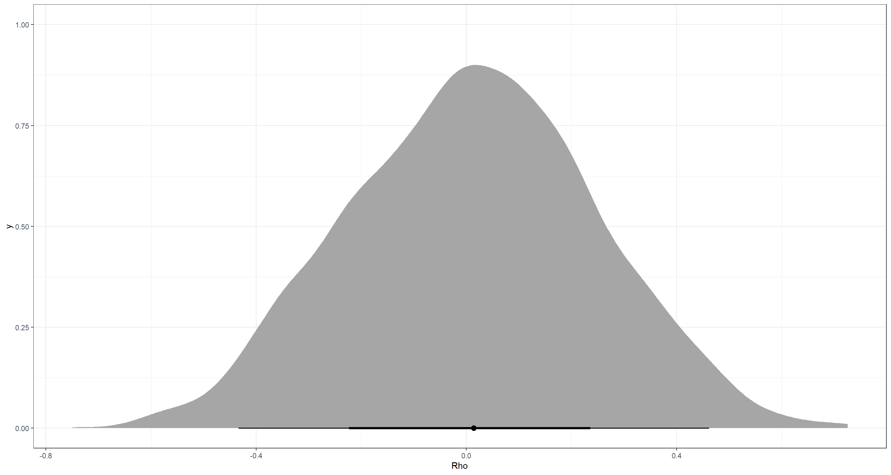
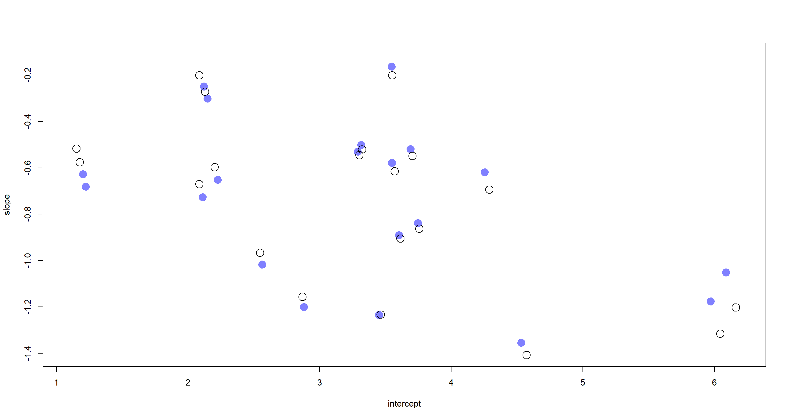
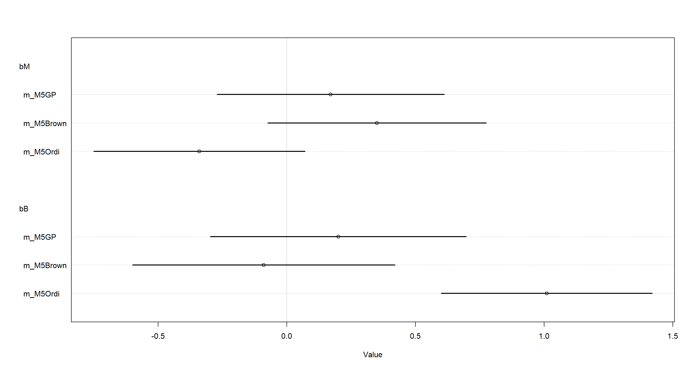
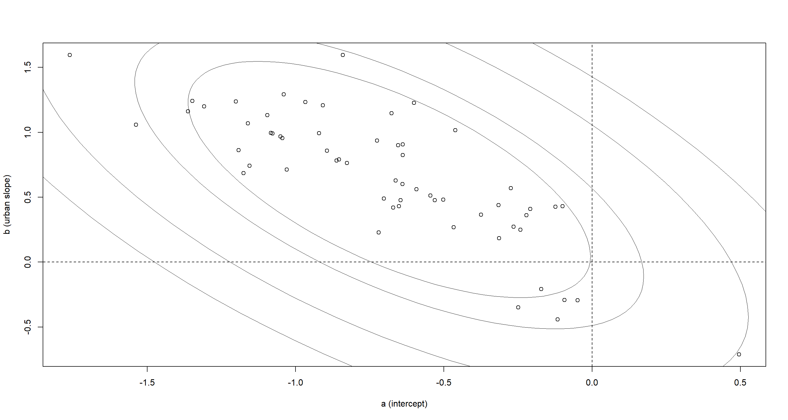
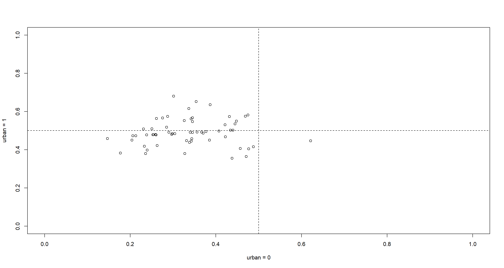
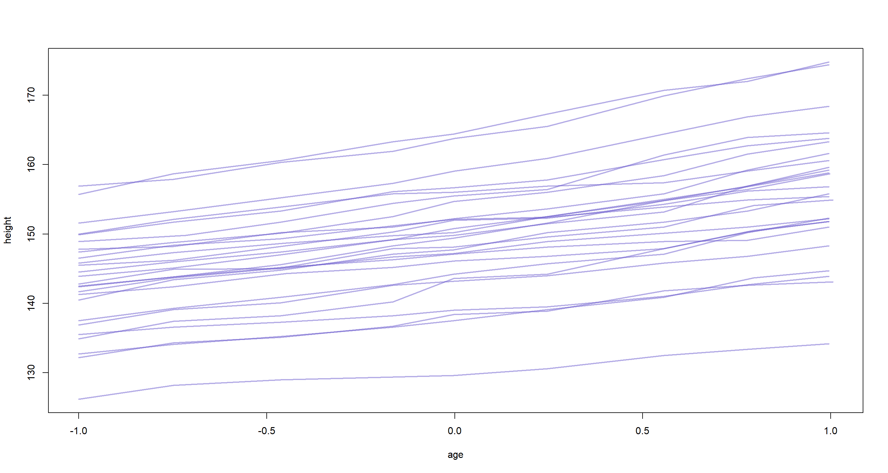
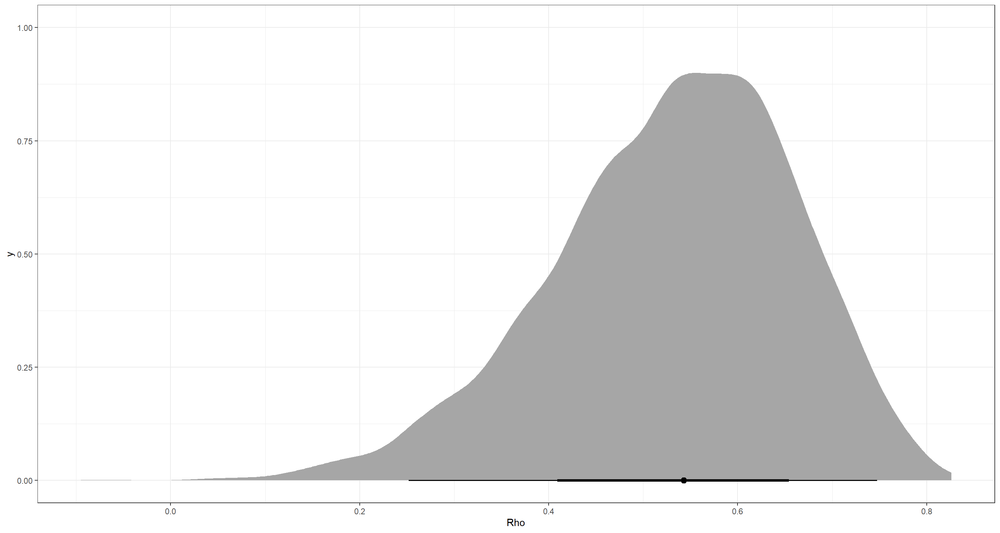
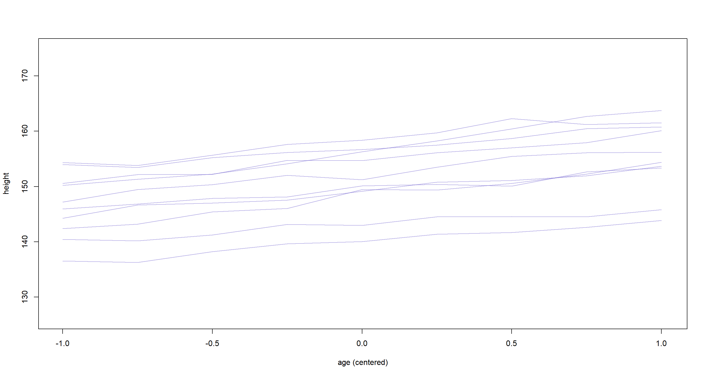

Chapter 14
Adventures in Covariance
Material
Introduction
These are answers and solutions to the exercises at the end of chapter 14 in Satistical Rethinking 2 by Richard McElreath. I have created these notes as a part of my ongoing involvement in the AU Bayes Study Group. Much of my inspiration for these solutions, where necessary, has been obtained from
the solutions provided to instructors by Richard McElreath himself.
R Environment
For today’s exercise, I load the following packages:
library(rethinking)
library(rstan)
library(MASS)
library(ellipse)
library(ape)
library(ggplot2)
library(tidybayes)
Easy Exercises
Practice E1
Question: Add to the following model varying slopes on the predictor $x$.
$$y_i ∼ Normal(µi, σ)$$ $$µ_i = α_{group[i]} + βx_i$$ $$α_{group} ∼ Normal(α, σ_α)$$ $$α ∼ Normal(0, 10)$$ $$β ∼ Normal(0, 1)$$ $$σ ∼ HalfCauchy(0, 2)$$ $$σ_α ∼ HalfCauchy(0, 2)$$
Answer: To do this, our outcome distribution does not change. So keep it as is:
$$y_i ∼ Normal(μ_i, σ)$$
Next, we come to the linear model. This needs changing. Since we are now interested in a varying slope for each group ($\beta_{group}$), we need to exchange the original $\beta$ with $\beta_{group}$:
$$μ_i = α_{group[i]} + β_{group[i]}x_i$$
Consequently, we also need to change our prior. Since $\alpha_{group}$ and $\beta_{group}$ now stem from a joint distribution, we need to express them as such. $\alpha$ is still the average intercept. However, $\beta$ now turns into the average slope. Both of these serve as the mean expectations for $\alpha_{group}$ and $\beta_{group}$ in a multivariate normal distribution ($MVNormal()$) with a covariance matrix ($S$) defining how they are linked.
$$\begin{bmatrix} \alpha_{group} \ \beta_{group} \ \end{bmatrix} \sim MVNormal \left(\begin{bmatrix} \alpha \ \beta \ \end{bmatrix}, S \right)$$
Since we have just introduced the need for a covariance matrix, we now need to define it. A covariance matrix is the product of a variance matrix and a correlation matrix ($R$). What we can do when determining the covariance matrix ($S$) is setting our variances for $\alpha$ and $\beta$ - $\sigma_\alpha$ and $\sigma_\beta$, respectively - and subsequently multiplying this with the correlation matrix ($R$):
$$S = \begin{pmatrix} \sigma_\alpha & 0 \ 0 & \sigma_\beta \ \end{pmatrix} R \begin{pmatrix} \sigma_\alpha & 0 \ 0 & \sigma_\beta \ \end{pmatrix} $$
The variances and correlation matrix referenced above need priors of their own - so called hyperpriors. Let’s start with the priors of the variances:
$$σ_α ∼ HalfCauchy(0, 2)$$ $$σ_\beta ∼ HalfCauchy(0, 2)$$
And also add a somewhat regularising prior for $R$:
$$R ∼ LKJcorr(2)$$
Lastly, we simply keep the priors for $\alpha$, $\beta$, and $\sigma$ from the original model. $$α ∼ Normal(0, 10)$$ $$β ∼ Normal(0, 1)$$ $$σ ∼ HalfCauchy(0, 2)$$
Practice E2
Question: Think up a context in which varying intercepts will be positively correlated with varying slopes. Provide a mechanistic explanation for the correlation.
Answer: A setting within which there is positive correlation between varying intercepts and varying slopes can be put in laymen-terms as: “A setting within which high intercepts come with steep slopes”. With that in mind, what could be such a setting?
There are many settings which would meet this criterion. I am a biologist by training and the first thing that came to mind was that of an ant colony. Let’s say we are interested studying ant hill size as a function of food availability. Ignoring the carrying capacity of a system, we can reasonably expect larger ant hills (higher intercepts) to benefit more strongly from increased food availability as their foraging will be much more efficient (steeper slope).
Of course, I realise that this thought experiment ignores some crucial bits of biological reality such as diminishing returns and structural integrity of ant hills after a certain size is reached. For the sake of keeping this example simple, I neglect them.
Practice E3
Question: When is it possible for a varying slopes model to have fewer effective parameters (as estimated by WAIC or DIC) than the corresponding model with fixed (unpooled) slopes? Explain.
Answer: When there is little or next-to-no variation among clusters. The absence of this among-cluster variation induces very strong shrinkage. As a result, albeit containing more actual parameters in the posterior distribution, the varying slopes model may end up less flexible in fitting to the data because of adaptive regularisation forcing strong shrinkage. Consequently, our number of effective parameters - a proxy of overfitting risk and posterior flexibility - decreases.
For an example, consult the comparison of models m13.1 and m13.2 in R Code 13.4 in the book.
Medium Exercises
Practice M1
Question: Repeat the café robot simulation from the beginning of the chapter. This time, set rho to zero, so that there is no correlation between intercepts and slopes. How does the posterior distribution of the correlation reflect this change in the underlying simulation?
Answer: This is what was done in the book. rho has been adjusted to be $0$ now:
# set up parameters of population
a <- 3.5 # average morning wait time
b <- (-1) # average difference afternoon wait time
sigma_a <- 1 # std dev in intercepts
sigma_b <- 0.5 # std dev in slopes
rho <- 0 # correlation between intercepts and slopes
Mu <- c(a, b)
cov_ab <- sigma_a * sigma_b * rho
Sigma <- matrix(c(sigma_a^2, cov_ab, cov_ab, sigma_b^2), ncol = 2)
# simulate observations
N_cafes <- 20
set.seed(6)
vary_effects <- mvrnorm(N_cafes, Mu, Sigma)
a_cafe <- vary_effects[, 1]
b_cafe <- vary_effects[, 2]
N_visits <- 10
afternoon <- rep(0:1, N_visits * N_cafes / 2)
cafe_id <- rep(1:N_cafes, each = N_visits)
mu <- a_cafe[cafe_id] + b_cafe[cafe_id] * afternoon
sigma <- 0.5 # std dev within cafes
wait <- rnorm(N_visits * N_cafes, mu, sigma)
# package into data frame
d <- data.frame(cafe = cafe_id, afternoon = afternoon, wait = wait)
And now to run our model (m14.1) with the exact same specification as in the book:
m_M1 <- ulam(
alist(
wait ~ normal(mu, sigma),
mu <- a_cafe[cafe] + b_cafe[cafe] * afternoon,
c(a_cafe, b_cafe)[cafe] ~ multi_normal(c(a, b), Rho, sigma_cafe),
a ~ normal(5, 2),
b ~ normal(-1, 0.5),
sigma_cafe ~ exponential(1),
sigma ~ exponential(1),
Rho ~ lkj_corr(2)
),
data = d, chains = 6, cores = 6
)
So what about that posterior distribution for Rho?
post <- extract.samples(m_M1)
ggplot() +
stat_halfeye(aes(x = post$Rho[, 1, 2])) +
theme_bw() +
labs(x = "Rho")

Jup. That accurately represents our underlying correlation of $0$. The precis output agrees:
precis(m_M1, pars = "Rho[1,2]")
## result
## mean 0.01110476
## sd 0.23468860
## 5.5% -0.36400650
## 94.5% 0.38982346
## n_eff 2833.41771477
## Rhat 1.00023118
Practice M2
Question: Fit this multilevel model to the simulated café data: $$W_i ∼ Normal(µ_i, σ)$$ $$µ_i = α_{café[i]} + β_{café[i]}A_i$$ $$α_{café} ∼ Normal(α, σ_α)$$ $$β_{café} ∼ Normal(β, σ_β)$$ $$α ∼ Normal(0, 10)$$ $$β ∼ Normal(0, 10)$$ $$σ ∼ HalfCauchy(0, 1)$$ $$σ_α ∼ HalfCauchy(0, 1)$$ $$σ_β ∼ HalfCauchy(0, 1)$$
Use WAIC to compare this model to the model from the chapter, the one that uses a multi-variate Gaussian prior. Explain the result.
Answer: I am strongly assuming that this question is targeting the simulated café data used in the book. I create that data again here:
# set up parameters of population
a <- 3.5 # average morning wait time
b <- -1 # average difference afternoon wait time
sigma_a <- 1 # std dev in intercepts
sigma_b <- 0.5 # std dev in slopes
rho <- -0.7 # correlation between intercepts and slopes
Mu <- c(a, b)
cov_ab <- sigma_a * sigma_b * rho
Sigma <- matrix(c(sigma_a^2, cov_ab, cov_ab, sigma_b^2), ncol = 2)
# simulate observations
N_cafes <- 20
set.seed(42)
vary_effects <- mvrnorm(N_cafes, Mu, Sigma)
a_cafe <- vary_effects[, 1]
b_cafe <- vary_effects[, 2]
N_visits <- 10
afternoon <- rep(0:1, N_visits * N_cafes / 2)
cafe_id <- rep(1:N_cafes, each = N_visits)
mu <- a_cafe[cafe_id] + b_cafe[cafe_id] * afternoon
sigma <- 0.5 # std dev within cafes
wait <- rnorm(N_visits * N_cafes, mu, sigma)
# package into data frame
d <- data.frame(cafe = cafe_id, afternoon = afternoon, wait = wait)
With the data at hand, I now run our baseline model which is, again, m14.1:
m_M2Baseline <- ulam(
alist(
wait ~ normal(mu, sigma),
mu <- a_cafe[cafe] + b_cafe[cafe] * afternoon,
c(a_cafe, b_cafe)[cafe] ~ multi_normal(c(a, b), Rho, sigma_cafe),
a ~ normal(5, 2),
b ~ normal(-1, 0.5),
sigma_cafe ~ exponential(1),
sigma ~ exponential(1),
Rho ~ lkj_corr(2)
),
data = d, chains = 4, cores = 4
)
And now onto our new model for this task. What is already striking is the use of independent intercepts and slopes. There is no correlation parameter between them so the assumed correlation, by the model, is $0$:
m_M2 <- ulam(
alist(
wait ~ dnorm(mu, sigma),
mu <- a_cafe[cafe] + b_cafe[cafe] * afternoon,
a_cafe[cafe] ~ dnorm(a, sigma_alpha),
b_cafe[cafe] ~ dnorm(b, sigma_beta),
a ~ dnorm(0, 10),
b ~ dnorm(0, 10),
sigma ~ dexp(1),
sigma_alpha ~ dexp(1),
sigma_beta ~ dexp(1)
),
data = d, chains = 4, cores = 4
)
But what actually distinguishes the model outputs now? Let’s extract posterior samples for intercepts and slopes from both models and investigate visually:
post_Base <- extract.samples(m_M2Baseline)
a_Base <- apply(post_Base$a_cafe, 2, mean)
b_Base <- apply(post_Base$b_cafe, 2, mean)
post_M2 <- extract.samples(m_M2)
a_M2 <- apply(post_M2$a_cafe, 2, mean)
b_M2 <- apply(post_M2$b_cafe, 2, mean)
plot(a_M2, b_M2,
xlab = "intercept", ylab = "slope",
pch = 16, col = rangi2, ylim = c(min(b_M2) - 0.05, max(b_M2) + 0.05),
xlim = c(min(a_M2) - 0.1, max(a_M2) + 0.1), cex = 2
)
points(a_Base, b_Base, pch = 1, cex = 2)

I have stuck to McElreath’s colour scheme here once more. The filled circles represent samples from our new model, while the open circles represent samples from the posterior obtained via the model which accounts for correlation of slopes and intercepts. First and foremost, these are pretty similar I must say. This agreement is particularly pronounced towards the centre of the plot with increasing divergences of the posterior samples at the fringes of the intercept and slope ranges. This comes down to what the underlying models assume. Our baseline model assumes that slopes and intercepts are inherently related to one another and finds a negative correlation between them. This can be seen when looking at the lower right-hand and the upper left-hand corner of the plot above. Given the baseline model assumption, large intercepts are associated with strongly negative slopes and vice versa.
The correlation-informed model does better here because it leverages more information from the entire population and just so happens to exactly mirror the data generation process.
Practice M3
Question: Re-estimate the varying slopes model for the UCBadmit data, now using a non-centered parametrization. Compare the efficiency of the forms of the model, using n_eff. Which is better? Which chain sampled faster?
Answer: Ok… This is a headache because there is no varying slopes model for the UCBadmit data in the bookchapter. So let’s make one ourselves and then re-parameterise it.
We start by loading and preparing the data. By defining an indicator variable for male we make it easier to fit a varying slopes model based on gender of applicant:
data(UCBadmit)
d <- UCBadmit
dat_list <- list(
admit = d$admit,
applications = d$applications,
male = ifelse(d$applicant.gender == "male", 1, 0),
dept_id = rep(1:6, each = 2)
)
str(dat_list)
## List of 4
## $ admit : int [1:12] 512 89 353 17 120 202 138 131 53 94 ...
## $ applications: int [1:12] 825 108 560 25 325 593 417 375 191 393 ...
## $ male : num [1:12] 1 0 1 0 1 0 1 0 1 0 ...
## $ dept_id : int [1:12] 1 1 2 2 3 3 4 4 5 5 ...
Now with the data in hand, we can fit our own model on varying slopes. Let’s think about this in theory first. What would this look like?
We start out with a binomial outcome distribution for our admitted applications:
$$admit_i ∼ Binomial(Applications, p_i)$$
Our next line is the linear model again. This time, the admittance rate ($p_i$) is a product of a department-specific intercept ($\alpha_{deptId}$) and slope ($\beta_{deptId}$):
$$p_i = \alpha_{deptID} + \beta_{deptID}*male$$
Since the varying slopes and intercepts are certain to be correlated, we specify a multivariate normal prior again:
$$\begin{bmatrix} \alpha_{deptID} \ \beta_{deptID} \ \end{bmatrix} \sim MVNormal \left(\begin{bmatrix} \alpha \ \beta \ \end{bmatrix}, S \right)$$
And now for the covariance matrix:
$$S = \begin{pmatrix} \sigma_\alpha & 0 \ 0 & \sigma_\beta \ \end{pmatrix} R \begin{pmatrix} \sigma_\alpha & 0 \ 0 & \sigma_\beta \ \end{pmatrix} $$
Finally, we just need some priors and hyperpriors:
$$σ_α ∼ Exponential(1)$$ $$σ_\beta ∼ Exponential(1)$$
And also add a somewhat regularising prior for $R$:
$$R ∼ LKJcorr(2)$$
Lastly, we simply keep the priors for $\alpha$, $\beta$: $$α ∼ Normal(0, 1)$$ $$β ∼ Normal(0, 1)$$
And now to do all of this in R:
Begin_C <- Sys.time()
m_M3 <- ulam(
alist(
admit ~ dbinom(applications, p),
logit(p) <- a[dept_id] + bm[dept_id] * male,
c(a, bm)[dept_id] ~ multi_normal(c(a_bar, bm_bar), Rho, sigma_dept),
a_bar ~ dnorm(0, 1),
bm_bar ~ dnorm(0, 1),
sigma_dept ~ dexp(1),
Rho ~ dlkjcorr(2)
),
data = dat_list, chains = 4, cores = 4
)
End_C <- Sys.time()
precis(m_M3, 3)
## mean sd 5.5% 94.5% n_eff Rhat4
## bm[1] -0.75467135 2.642890e-01 -1.1974575 -0.3419394 762.8361 1.0035396
## bm[2] -0.21546963 3.141762e-01 -0.7172490 0.2702785 1444.8377 1.0007292
## bm[3] 0.07788729 1.395628e-01 -0.1457046 0.3005848 1519.8738 1.0005234
## bm[4] -0.09706014 1.389302e-01 -0.3171928 0.1276948 1760.1554 0.9999004
## bm[5] 0.11606582 1.793774e-01 -0.1610577 0.4022199 1726.0739 1.0005376
## bm[6] -0.10986997 2.643276e-01 -0.5302442 0.3009293 1397.2613 1.0030231
## a[1] 1.27128456 2.477604e-01 0.8819218 1.6722364 778.7511 1.0032979
## a[2] 0.74963140 3.154061e-01 0.2626239 1.2484753 1436.8953 1.0004966
## a[3] -0.64605733 8.582742e-02 -0.7808221 -0.5086328 1617.3253 0.9995321
## a[4] -0.61501279 1.019817e-01 -0.7774726 -0.4515837 1708.0376 0.9992410
## a[5] -1.13005620 1.096386e-01 -1.3054035 -0.9559542 1993.4173 1.0004230
## a[6] -2.60481876 2.045530e-01 -2.9411431 -2.2759003 1799.7746 1.0015531
## a_bar -0.39106882 5.307969e-01 -1.2265922 0.4709463 1698.0086 0.9994382
## bm_bar -0.16176143 2.137141e-01 -0.4947019 0.1694293 1403.2870 1.0018595
## sigma_dept[1] 1.48653705 4.716297e-01 0.9088349 2.3531967 1292.0985 1.0008335
## sigma_dept[2] 0.44566910 2.144169e-01 0.1819589 0.8410725 988.9796 1.0015728
## Rho[1,1] 1.00000000 0.000000e+00 1.0000000 1.0000000 NaN NaN
## Rho[1,2] -0.32154165 3.408218e-01 -0.8124723 0.2811236 1522.8640 1.0015113
## Rho[2,1] -0.32154165 3.408218e-01 -0.8124723 0.2811236 1522.8640 1.0015113
## Rho[2,2] 1.00000000 8.265587e-17 1.0000000 1.0000000 1811.6478 0.9979980
Let’s just acknowledge that the precis() output is here, but move on for now to the re-parametrised model.
I am not even going to attempt to come up with the mathematical notation of the non-centred version of the above model. Luckily, I don’t have to because ulam() has helper functions which can do this for me:
Begin_NC <- Sys.time()
m_M3NonCent <- ulam(
alist(
admit ~ dbinom(applications, p),
logit(p) <- a_bar + v[dept_id, 1] + (bm_bar + v[dept_id, 2]) * male,
transpars > matrix[dept_id, 2]:v <- compose_noncentered(sigma_dept, L_Rho, z),
matrix[2, dept_id]:z ~ dnorm(0, 1),
a_bar ~ dnorm(0, 1.5),
bm_bar ~ dnorm(0, 1),
vector[2]:sigma_dept ~ dexp(1),
cholesky_factor_corr[2]:L_Rho ~ lkj_corr_cholesky(2)
),
data = dat_list, chains = 4, cores = 4
)
End_NC <- Sys.time()
precis(m_M3NonCent, 3)
## mean sd 5.5% 94.5% n_eff Rhat4
## z[1,1] 1.27847990 0.5262323 0.4705305 2.13326205 727.0227 1.0011087
## z[1,2] 0.88269092 0.4857079 0.1388867 1.68994558 719.7999 1.0031813
## z[1,3] -0.12528283 0.3849925 -0.7106325 0.50669799 612.7119 1.0140975
## z[1,4] -0.10433526 0.3866020 -0.6958663 0.51682268 601.9049 1.0154629
## z[1,5] -0.48074322 0.4055438 -1.1153447 0.16675545 643.6182 1.0175388
## z[1,6] -1.56200990 0.5688037 -2.4838992 -0.69872746 737.3167 1.0145782
## z[2,1] -1.23644880 0.8164974 -2.6022559 0.05071129 1271.1801 1.0026798
## z[2,2] 0.18312727 0.8096899 -1.0820859 1.45719856 1573.6340 1.0003249
## z[2,3] 0.60192227 0.6276861 -0.3439741 1.64761142 1203.4125 1.0020469
## z[2,4] 0.10146041 0.5799030 -0.8100848 1.01529134 1291.1294 1.0015204
## z[2,5] 0.53484163 0.6684946 -0.4889643 1.64962250 1165.4873 1.0009753
## z[2,6] -0.49127010 0.8038063 -1.8068248 0.74735922 1885.4880 1.0003286
## a_bar -0.46792318 0.5611715 -1.3795380 0.39745615 588.0941 1.0121940
## bm_bar -0.13969516 0.2136100 -0.4695941 0.18952741 799.7150 1.0034511
## sigma_dept[1] 1.46852953 0.4505571 0.9255641 2.31989495 833.1351 1.0030067
## sigma_dept[2] 0.44493698 0.2388977 0.1818530 0.86089979 757.1626 0.9991599
## L_Rho[1,1] 1.00000000 0.0000000 1.0000000 1.00000000 NaN NaN
## L_Rho[1,2] 0.00000000 0.0000000 0.0000000 0.00000000 NaN NaN
## L_Rho[2,1] -0.31981947 0.3440124 -0.8022403 0.29104897 1687.4781 1.0001054
## L_Rho[2,2] 0.87223636 0.1365401 0.5970006 0.99912792 1190.3266 1.0002817
## v[1,1] 1.73536453 0.6011856 0.8128695 2.70174932 648.8099 1.0094272
## v[1,2] -0.61370995 0.3128848 -1.1315494 -0.14674125 1028.2946 1.0005503
## v[2,1] 1.19934441 0.6279810 0.2169330 2.22040335 675.6765 1.0101770
## v[2,2] -0.06176349 0.3328516 -0.5897528 0.46209909 1539.0956 1.0001901
## v[3,1] -0.17733549 0.5673456 -1.0542767 0.75415175 593.0556 1.0109594
## v[3,2] 0.21846891 0.2395483 -0.1438607 0.60551012 1035.9533 1.0016130
## v[4,1] -0.14832190 0.5675488 -1.0127159 0.76606136 575.1370 1.0125444
## v[4,2] 0.04602378 0.2363775 -0.3298587 0.41695086 890.5646 1.0022504
## v[5,1] -0.65983984 0.5702765 -1.5558841 0.26053379 610.1289 1.0114797
## v[5,2] 0.25080258 0.2583262 -0.1081353 0.67319529 1159.0924 1.0024436
## v[6,1] -2.12809664 0.5847887 -3.0186504 -1.19350046 633.0943 1.0111973
## v[6,2] 0.02683558 0.3048067 -0.4676814 0.50643307 1645.9028 1.0004084
First of all, we can see that the number of effective samples (n_eff) is higher for the centred model (m_M3) which is surprising to me. I thought that non-centred models were supposed to sample more efficiently. Maybe the underlying data just doesn’t suffer from abrupt changes in posterior slope?
So what about running time?
# Centred
End_C - Begin_C
## Time difference of 55.36985 secs
# Non-Centred
End_NC - Begin_NC
## Time difference of 51.25241 secs
Ok. The non-centred model ran slightly faster.
Practice M4
Question: Use WAIC to compare the Gaussian process model of Oceanic tools to the models fit to the same data in Chapter 11. Pay special attention to the effective numbers of parameters, as estimated by WAIC.
Answer: So this needed some digging. The models in question are m11.11 for the simpler model of CHapter 11 and m14.8 from Chapter 14.
Before we can do any modelling, we need to load and prepare the data:
data(Kline)
d <- Kline
# Chapter 11 stuff
d$P <- scale(log(d$population))
d$contact_id <- ifelse(d$contact == "high", 2, 1)
# Chapter 14 stuff
d$society <- 1:10
data(islandsDistMatrix)
With the data at hand, I simply use the exact same code as in the book to execute the respective models. Note that I have set the ulam() argument log_lik=TRUE for comparison with WAIC in the next step.
## Chapter 11 Model
dat2 <- list(T = d$total_tools, P = d$population, cid = d$contact_id)
m11.11 <- ulam(
alist(
T ~ dpois(lambda),
lambda <- exp(a[cid]) * P^b[cid] / g,
a[cid] ~ dnorm(1, 1),
b[cid] ~ dexp(1),
g ~ dexp(1)
),
data = dat2, chains = 4, cores = 4, log_lik = TRUE
)
## Chapter 14 Model
dat_list <- list(T = d$total_tools, P = d$population, society = d$society, Dmat = islandsDistMatrix)
m14.8 <- ulam(
alist(
T ~ dpois(lambda),
lambda <- (a * P^b / g) * exp(k[society]),
vector[10]:k ~ multi_normal(0, SIGMA),
matrix[10, 10]:SIGMA <- cov_GPL2(Dmat, etasq, rhosq, 0.01), c(a, b, g) ~ dexp(1), etasq ~ dexp(2), rhosq ~ dexp(0.5)
),
data = dat_list, chains = 4, cores = 4, iter = 2000, log_lik = TRUE
)
We have both models at the ready, let’s do what the task asked of us and compare their out-of-sample accuracy predictions:
compare(m11.11, m14.8)
## WAIC SE dWAIC dSE pWAIC weight
## m14.8 67.87559 2.370998 0.00000 NA 4.196489 0.998336383
## m11.11 80.66978 11.103427 12.79419 10.95919 5.148678 0.001663617
The more complex model taking into account spatial distances of societies - m14.8 - outperforms the previously held “best” model (m11.11). We also see that the Gaussian process model has less effective parameters (pWAIC) than the simpler model. This is a sign of intense regularisation on the part of the Gaussian Process model.
Practice M5
Question: Modify the phylogenetic distance example to use group size as the outcome and brain size as a predictor. Assuming brain size influences group size, what is your estimate of the effect? How does phylogeny influence the estimate?
Answer: This is the example from the book, but simply just switching the positions of group size and brain size in the model specification. Coincidentally, this is the model shown in the YouTube Lecture series by Richard McElreath.
For now, we start by loading the data as was done in the book and establish our first data list for subsequent modelling:
data(Primates301)
d <- Primates301
d$name <- as.character(d$name)
dstan <- d[complete.cases(d$group_size, d$body, d$brain), ]
spp_obs <- dstan$name
dat_list <- list(
N_spp = nrow(dstan),
M = standardize(log(dstan$body)),
B = standardize(log(dstan$brain)),
G = standardize(log(dstan$group_size)),
Imat = diag(nrow(dstan))
)
With this part of the observational data ready, I now turn to phylogenetic data which we can obtain and attach to our data list like so:
data(Primates301_nex)
tree_trimmed <- keep.tip(Primates301_nex, spp_obs) # only keep tree that's relevant to our species
Rbm <- corBrownian(phy = tree_trimmed) # calculate expected covariance given a Brownian model
V <- vcv(Rbm) # compute expected variances and covariances
Dmat <- cophenetic(tree_trimmed) # cophenetic distance matrix
dat_list$V <- V[spp_obs, spp_obs] # covariances in speciesXspecies matrix
dat_list$R <- dat_list$V / max(V) # relative covariances of speciesXspecies matrix
And we are ready to run our first model! Because they book went through multiple candidate models so do I.
Here, I start off with the basic, ordinary regression:
m_M5Ordi <- ulam(
alist(
G ~ multi_normal(mu, SIGMA),
mu <- a + bM * M + bB * B,
matrix[N_spp, N_spp]:SIGMA <- Imat * sigma_sq,
a ~ normal(0, 1),
c(bM, bB) ~ normal(0, 0.5),
sigma_sq ~ exponential(1)
),
data = dat_list, chains = 4, cores = 4
)
Next, I run the Brownian motion model:
m_M5Brown <- ulam(
alist(
G ~ multi_normal(mu, SIGMA),
mu <- a + bM * M + bB * B,
matrix[N_spp, N_spp]:SIGMA <- R * sigma_sq,
a ~ normal(0, 1),
c(bM, bB) ~ normal(0, 0.5),
sigma_sq ~ exponential(1)
),
data = dat_list, chains = 4, cores = 4
)
Lastly, I execute a Gaussian Process model. To do so, we need to convert our phylogenetic distance matrix into a relative measure of distance among our species:
dat_list$Dmat <- Dmat[spp_obs, spp_obs] / max(Dmat)
m_M5GP <- ulam(
alist(
G ~ multi_normal(mu, SIGMA),
mu <- a + bM * M + bB * B,
matrix[N_spp, N_spp]:SIGMA <- cov_GPL1(Dmat, etasq, rhosq, 0.01),
a ~ normal(0, 1),
c(bM, bB) ~ normal(0, 0.5),
etasq ~ half_normal(1, 0.25),
rhosq ~ half_normal(3, 0.25)
),
data = dat_list, chains = 4, cores = 4
)
plot(coeftab(m_M5Ordi, m_M5Brown, m_M5GP), pars = c("bM", "bB"))

From the above, we clearly see that model which does not take into account our phylogeny - m_M5Ordi - finds a clearly non-zero dependence of brain size on group size. However, both model which do include phylogenetic information - m_M5Brown and m_M5GP - do not show this relationship. Adding phylogenetic information seems to reduce the evidence for a causal link between brain size and group size.
Hard Exercises
Practice H1
Question: Let’s revisit the Bangladesh fertility data, data(bangladesh), from the practice problems for Chapter 13. Fit a model with both varying intercepts by district_id and varying slopes of urban by district_id. You are still predicting use.contraception.
Inspect the correlation between the intercepts and slopes. Can you interpret this correlation, in terms of what it tells you about the pattern of contraceptive use in the sample? It might help to plot the mean (or median) varying effect estimates for both the intercepts and slopes, by district. Then you can visualize the correlation and maybe more easily think through what it means to have a particular correlation. Plotting predicted proportion of women using contraception, with urban women on one axis and rural on the other, might also help.
Answer: Once more, I start by loading the data and preparing it as was done in a previous chapter:
data(bangladesh)
d <- bangladesh
dat_list <- list(
C = d$use.contraception,
did = as.integer(as.factor(d$district)),
urban = d$urban
)
Now I can run my model:
m_H1 <- ulam(
alist(
C ~ bernoulli(p),
logit(p) <- a[did] + b[did] * urban,
c(a, b)[did] ~ multi_normal(c(abar, bbar), Rho, Sigma),
abar ~ normal(0, 1),
bbar ~ normal(0, 0.5),
Rho ~ lkj_corr(2),
Sigma ~ exponential(1)
),
data = dat_list, chains = 4, cores = 4, iter = 4000
)
And now look at the posterior estimates of average effects:
precis(m_H1)
## mean sd 5.5% 94.5% n_eff Rhat4
## abar -0.6842219 0.1003302 -0.8475050 -0.5301731 6158.562 1.000395
## bbar 0.6369826 0.1590421 0.3866908 0.8900233 4474.285 1.000145
Unsurprisingly, I find a positive effect for bbar which indicates that contraception is used more frequently in urban areas.
Looking deeper into the posterior estimates:
precis(m_H1, depth = 3, pars = c("Rho", "Sigma"))
## mean sd 5.5% 94.5% n_eff Rhat4
## Rho[1,1] 1.0000000 0.000000e+00 1.0000000 1.0000000 NaN NaN
## Rho[1,2] -0.6512997 1.696069e-01 -0.8680436 -0.3443487 1431.4457 1.0003693
## Rho[2,1] -0.6512997 1.696069e-01 -0.8680436 -0.3443487 1431.4457 1.0003693
## Rho[2,2] 1.0000000 5.972661e-17 1.0000000 1.0000000 7485.2487 0.9994999
## Sigma[1] 0.5762512 9.710360e-02 0.4308600 0.7404430 1990.0617 1.0021542
## Sigma[2] 0.7731623 1.991282e-01 0.4617857 1.0991674 967.7497 1.0034399
shows a negative correlation between the intercepts and slopes (Rho[1,2] or Rho[2,1]).
Let’s plot this relationship between the varying effects to get a better understanding of what is happening:
post <- extract.samples(m_H1)
a <- apply(post$a, 2, mean)
b <- apply(post$b, 2, mean)
plot(a, b, xlab = "a (intercept)", ylab = "b (urban slope)")
abline(h = 0, lty = 2)
abline(v = 0, lty = 2)
R <- apply(post$Rho, 2:3, mean)
s <- apply(post$Sigma, 2, mean)
S <- diag(s) %*% R %*% diag(s)
ll <- c(0.5, 0.67, 0.89, 0.97)
for (l in ll) {
el <- ellipse(S, centre = c(mean(post$abar), mean(post$bbar)), level = l)
lines(el, col = "black", lwd = 0.5)
}

So districts with higher use of contraception outside of urban areas come with smaller slopes. Basically, what this means is that districts which boast a high use of contraception outside of urban areas do not have a marked shift in use of contraceptives when moving to urban areas.
We can also show this in probability scale by applying inverse logit transformation to our estimates:
u0 <- inv_logit(a)
u1 <- inv_logit(a + b)
plot(u0, u1, xlim = c(0, 1), ylim = c(0, 1), xlab = "urban = 0", ylab = "urban = 1")
abline(h = 0.5, lty = 2)
abline(v = 0.5, lty = 2)

Practice H2
Question: Varying effects models are useful for modelling time series, as well as spatial clustering. In a time series, the observations cluster by entities that have continuity through time, such as individuals. Since observations within individuals are likely highly correlated, the multilevel structure can help quite a lot. You’ll use the data in data(Oxboys), which is 234 height measurements on 26 boys from an Oxford Boys Club (I think these were like youth athletic leagues?), at 9 different ages (centred and standardized) per boy.
You’ll be interested in predicting height, using age, clustered by Subject (individual boy). Fit a model with varying intercepts and slopes (on age), clustered by Subject. Present and interpret the parameter estimates. Which varying effect contributes more variation to the heights, the intercept or the slope?
Answer: I start with loading the data, standardising the age data, and making the subject IDs into an index:
data(Oxboys)
d <- Oxboys
d$A <- standardize(d$age)
d$id <- coerce_index(d$Subject)
Armed with my data, I can now turn to modelling:
m_H2 <- ulam(
alist(
height ~ dnorm(mu, sigma),
mu <- a_bar + a[id] + (b_bar + b[id]) * A,
a_bar ~ dnorm(150, 10),
b_bar ~ dnorm(0, 10),
c(a, b)[id] ~ multi_normal(0, Rho_id, sigma_id),
sigma_id ~ dexp(1),
Rho_id ~ dlkjcorr(2),
sigma ~ dexp(1)
),
data = d, chains = 4, cores = 4, iter = 4000
)
The model has compiled and I am interested in the output it produced concerning average effects and variation:
precis(m_H2, depth = 2, pars = c("a_bar", "b_bar", "sigma_id"))
## mean sd 5.5% 94.5% n_eff Rhat4
## a_bar 149.523993 1.3844230 147.2887666 151.690432 293.0144 1.011856
## b_bar 4.230315 0.2073667 3.8999943 4.554123 414.4092 1.003962
## sigma_id[1] 7.331832 0.8789976 6.0675622 8.840290 4173.7730 1.001038
## sigma_id[2] 1.065676 0.1525730 0.8508899 1.336301 4141.6398 1.000750
Since age is standardised, a_bar represent the average height at average age in the data set. The average slope b_bar represents change in height for a one-unit change in standardised age.
I don’t like interpreting standardised data coefficients like that. Let’s rather plot it:
plot(height ~ age, type = "n", data = d)
for (i in 1:26) {
h <- d$height[d$Subject == i]
a <- d$age[d$Subject == i]
lines(a, h, col = col.alpha("slateblue", 0.5), lwd = 2)
}

Now the the task at hand. Which effect contributes more to the overall heights of our individuals? Given the plot above, I’d argue that it is the varying intercepts which provide us with most of the variation in heights. However, this is very much down to the data and should not be generalised beyond this data set. It might completely fall apart if we had longer time-series of data values.
Practice H3
Question: Now consider the correlation between the varying intercepts and slopes. Can you explain its value? How would this estimated correlation influence your predictions about a new sample of boys?
Answer: For this, we look at the correlation matrix Rho_id:
precis(m_H2, depth = 3, pars = "Rho_id")
## mean sd 5.5% 94.5% n_eff Rhat4
## Rho_id[1,1] 1.0000000 0.000000e+00 1.0000000 1.0000000 NaN NaN
## Rho_id[1,2] 0.5307351 1.283373e-01 0.3046972 0.7170573 4627.842 1.0007918
## Rho_id[2,1] 0.5307351 1.283373e-01 0.3046972 0.7170573 4627.842 1.0007918
## Rho_id[2,2] 1.0000000 7.886203e-17 1.0000000 1.0000000 7829.277 0.9994999
So there is a positive correlation. Let’s visualise that:
ggplot() +
stat_halfeye(aes(x = extract.samples(m_H2)$Rho_id[, 1, 2])) +
theme_bw() +
labs(x = "Rho")

The positive correlation implies that larger intercepts are associated with steeper slopes. What this means is that taller boys grow faster.
Practice H4
Question: Use mvrnorm (in library(MASS)) or rmvnorm (in library(mvtnorm)) to simulate a new sample of boys, based upon the posterior mean values of the parameters.
That is, try to simulate varying intercepts and slopes, using the relevant parameter estimates, and then plot the predicted trends of height on age, one trend for each simulated boy you produce. A sample of 10 simulated boys is plenty, to illustrate the lesson. You can ignore uncertainty in the posterior, just to make the problem a little easier. But if you want to include the uncertainty about the parameters, go for it.
Note that you can construct an arbitrary variance-covariance matrix to pass to either mvrnorm or rmvnorm with something like:
S <- matrix(c(sa^2, sa * sb * rho, sa * sb * rho, sb^2), nrow = 2)
where sa is the standard deviation of the first variable, sb is the standard deviation of the second variable, and rho is the correlation between them.
Answer: To simulate new observations we need to obtain the estimates of our model so far:
post <- extract.samples(m_H2)
rho <- mean(post$Rho_id[, 1, 2])
sb <- mean(post$sigma_id[, 2])
sa <- mean(post$sigma_id[, 1])
sigma <- mean(post$sigma)
a <- mean(post$a_bar)
b <- mean(post$b_bar)
Now we can define the variance-covariance matrix:
S <- matrix(c(sa^2, sa * sb * rho, sa * sb * rho, sb^2), nrow = 2)
round(S, 2)
## [,1] [,2]
## [1,] 53.76 4.15
## [2,] 4.15 1.14
Subsequently, we can sample from the multivariate normal distribution given our variance-covariance matrix to obtain a bivariate distribution of intercepts and slopes:
ve <- mvrnorm(10, c(0, 0), Sigma = S)
ve
## [,1] [,2]
## [1,] -0.2914409 -0.8985609
## [2,] 8.8137562 0.3436168
## [3,] -1.5233131 1.5530926
## [4,] -9.5179212 -0.6967038
## [5,] 7.6547083 -0.3622056
## [6,] 5.4710535 -0.3060008
## [7,] -0.3548003 0.1445644
## [8,] 7.2706590 3.0081540
## [9,] 2.8143313 0.1653603
## [10,] -6.3582595 -1.0162374
These are individual intercepts and slopes of 10 random boys have which we only need to add to the average intercept and slope values to generate predicted heights for them. Here, we simulate the trend for each boy and add it to a plot:
age.seq <- seq(from = -1, to = 1, length.out = 9)
plot(0, 0, type = "n", xlim = range(d$age), ylim = range(d$height), xlab = "age (centered)", ylab = "height")
for (i in 1:nrow(ve)) {
h <- rnorm(9,
mean = a + ve[i, 1] + (b + ve[i, 2]) * age.seq,
sd = sigma
)
lines(age.seq, h, col = col.alpha("slateblue", 0.5))
}

Session Info
sessionInfo()
## R version 4.0.5 (2021-03-31)
## Platform: x86_64-w64-mingw32/x64 (64-bit)
## Running under: Windows 10 x64 (build 19043)
##
## Matrix products: default
##
## locale:
## [1] LC_COLLATE=English_United Kingdom.1252 LC_CTYPE=English_United Kingdom.1252 LC_MONETARY=English_United Kingdom.1252 LC_NUMERIC=C
## [5] LC_TIME=English_United Kingdom.1252
##
## attached base packages:
## [1] parallel stats graphics grDevices utils datasets methods base
##
## other attached packages:
## [1] tidybayes_2.3.1 ape_5.5 ellipse_0.4.2 MASS_7.3-53.1 rethinking_2.13 rstan_2.21.2 ggplot2_3.3.6 StanHeaders_2.21.0-7
##
## loaded via a namespace (and not attached):
## [1] sass_0.3.1 tidyr_1.1.3 jsonlite_1.7.2 R.utils_2.10.1 bslib_0.2.4 RcppParallel_5.1.2 assertthat_0.2.1 distributional_0.2.2 highr_0.9
## [10] stats4_4.0.5 ggdist_2.4.0 yaml_2.2.1 pillar_1.6.0 backports_1.2.1 lattice_0.20-41 glue_1.4.2 arrayhelpers_1.1-0 digest_0.6.27
## [19] colorspace_2.0-0 htmltools_0.5.1.1 R.oo_1.24.0 plyr_1.8.6 pkgconfig_2.0.3 svUnit_1.0.6 bookdown_0.22 purrr_0.3.4 mvtnorm_1.1-1
## [28] scales_1.1.1 processx_3.5.1 tibble_3.1.1 styler_1.4.1 generics_0.1.0 farver_2.1.0 ellipsis_0.3.2 withr_2.4.2 cli_3.0.0
## [37] magrittr_2.0.1 crayon_1.4.1 evaluate_0.14 ps_1.6.0 R.methodsS3_1.8.1 fansi_0.4.2 R.cache_0.14.0 nlme_3.1-152 forcats_0.5.1
## [46] pkgbuild_1.2.0 blogdown_1.3 tools_4.0.5 loo_2.4.1 prettyunits_1.1.1 lifecycle_1.0.0 matrixStats_0.61.0 stringr_1.4.0 V8_3.4.1
## [55] munsell_0.5.0 callr_3.7.0 compiler_4.0.5 jquerylib_0.1.4 rlang_0.4.11 grid_4.0.5 labeling_0.4.2 rmarkdown_2.7 gtable_0.3.0
## [64] codetools_0.2-18 inline_0.3.17 DBI_1.1.1 curl_4.3.2 rematch2_2.1.2 R6_2.5.0 gridExtra_2.3 knitr_1.33 dplyr_1.0.5
## [73] utf8_1.2.1 shape_1.4.5 stringi_1.5.3 Rcpp_1.0.7 vctrs_0.3.7 tidyselect_1.1.0 xfun_0.22 coda_0.19-4